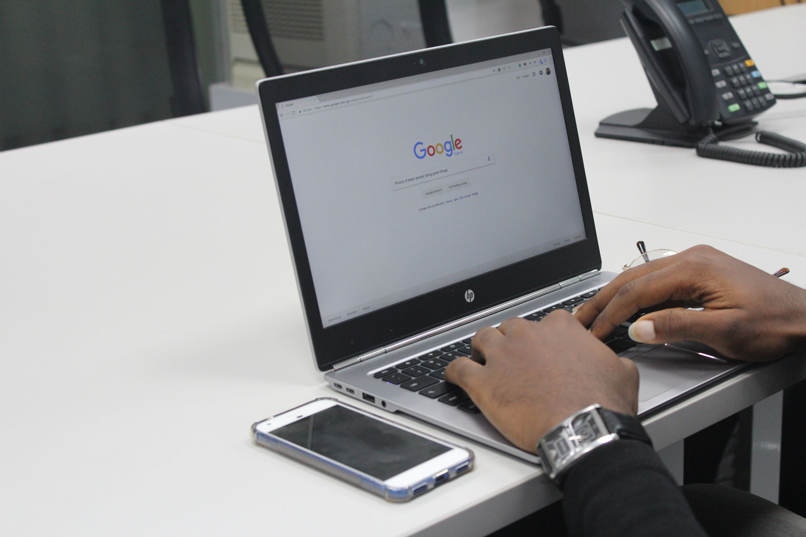

digi.komp12
Suche, Auswahl und Organisation
von Information
Tobias Antensteiner

Was werden wir in den nächsten 40 Minuten machen?
- Überblick – Worum geht es?
- Konzept – Was ist die Grundidee?
- Let’s get ready to rumble – Wie schaut die Einheit konkret aus?
- Methodenwahl – Warum diese Inhalte und Methoden?
- Ausblick – Wie könnte es weitergehen?
- Diskussion und Feedback – Was denkt ihr?
Überblick – Worum geht es? (Teil I)
- Kompetenzmodell: digi.komp12
- Thema: Angewandte Informatik
- Suche, Auswahl und Organisation
- Kompetenz: Suche von Informationen und digitale Medien
- Ich kann […] Informationen und digitale Medien gezielt suchen und auswählen.
Überblick – Worum geht es? (Teil II)
- Sozialform: Wer arbeitet mit wem zusammen?
- SuS abarbeiten in 4er-Gruppen im Raum verteilt
- Teilweise Kommunkation der einzelnen Gruppen untereinander erforderlich
- Arbeitsform: Welche Handlungsmuster sollen ausgeführt werden?
- Ein "Spielfeld" bildet Zentrum aller Aktivitäten
- SuS abarbeiten an Arbeitsaufträgen
Überblick – Worum geht es? (Teil III)
- Arbeitsauftrags-Auswahl: Welche Arbeitsaufträge werden von wem bearbeitet?
- 4er-Gruppen arbeiten Arbeitsaufträge am "Spielfeld" ab
- Abarbeitung wurde (vor)geplant, d.h. jede Gruppe bekommt ähnliche Aufträge
- Gruppenfindung: Wie kommt eine 4er-Gruppe zustande?
- Keine Separation nach Interessen oder sozialen Vorlieben
- Gruppenauswahl zufällig
Let’s get ready to rumble – Wie schaut die Einheit konkret aus? (Teil I)
- Vorbereitungen: Was unmittelbar vor der Einheit zu tun ist.
- Zurechtrücken der Tische
- Aufbau des Speilfelds
- Stundenbeginn: Was am Anfang der Stunde passieren (sollte) …
- Motivieren der SuS
- Erklärung des Arbeitsauftrags
- Einteilung der SuS in 4er-Gruppen
- "Coaching-Phase“: Unterstützen der SuS bei Schwierigkeiten
Let’s get ready to rumble – Wie schaut die Einheit konkret aus? (Teil II)
- Gemeinsame Aufgabe ist es, alle 25 grauen Quadrate umzudrehen
- Auf der Rückseite steht nächster Arbeitsauftrag
- Auf der Vorderseite steht ein Tipp für einen anderen Arbeitsauftrag
- Ein Quadrat kann umgedreht werden, wenn auf ihm die Lösung eines Arbeitsauftrags steht
- Für das Lösen der Aufgaben soll nur google.at verwendet werden
- Je 4er-Gruppe sind acht Aufgeben zu lösen
- Jeden Tipp gibt es nur einmal, d.h. Austausch zwischen Gruppen ist wichtig
Methodenwahl – Warum diese Inhalte und Methoden?
- Behaviorismus: Lernumgebung und positive Verstärkung
- Gruppenarbeit bietet angenehme Lernumgebung
- Positive Verstärkung durch erfolgreiches Lösen der Teilaufgaben
- Kognitivismus: Strukturierte Darstellung und Anknüpfung an Wissen
- Strukturierte Darstellung der Lehrinhalte durch zentrales Spielfeld
- Fächerübergreifende Fragen bieten Anknüpfung zu bekanntem Wissen
- Konstruktivismus: Wirklichkeitsnahes Lernen und aktive Auseinandersetzung
- Durch das Erarbeiten der Aufgaben erfolgt das Lernen wirklichkeitsnah
- Aktive, handlungsorientierte Auseinandersetzung mit Stoff
Ausblick – Wie könnte es weitergehen?
- Mediensuche mit Google: Gezielte Suche von Bildern und Videos
- Als Gruppenarbeit in nächster Einheit
- Als Referatsthema im Pool „Internet“
- Vergleich mit andere Suchmaschinen: Eigenheiten und Gemeinsamkeiten
- Als Hausübung mit Arbeitsaufträgen
- Als Referat im Pool „Suchmaschinen“
- Easter-Eggs: Herausfinden weiterer Google Easter-Eggs
- Als freiwillige Hausübung mit Präsentation in nächster Einheit
- Als Referat zur Notenverbesserung